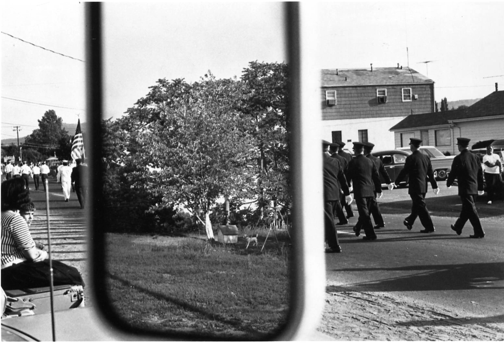
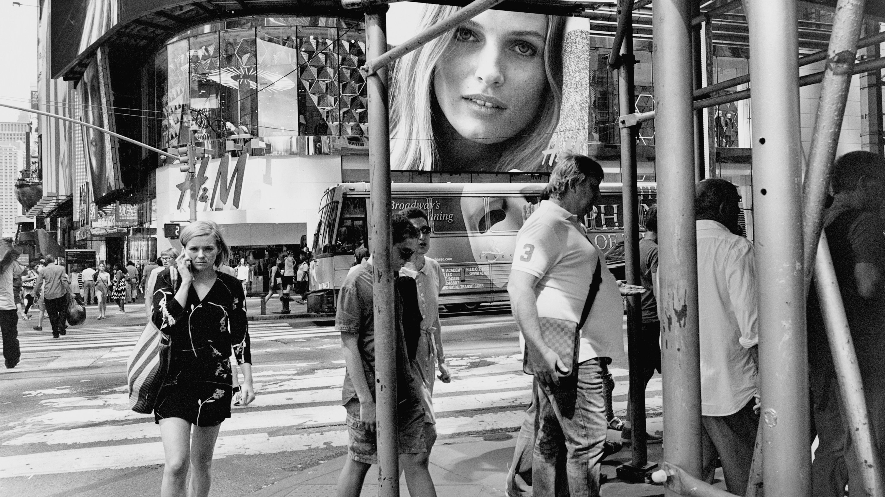
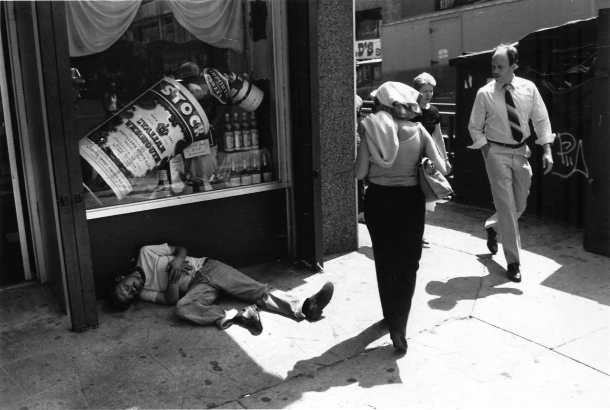
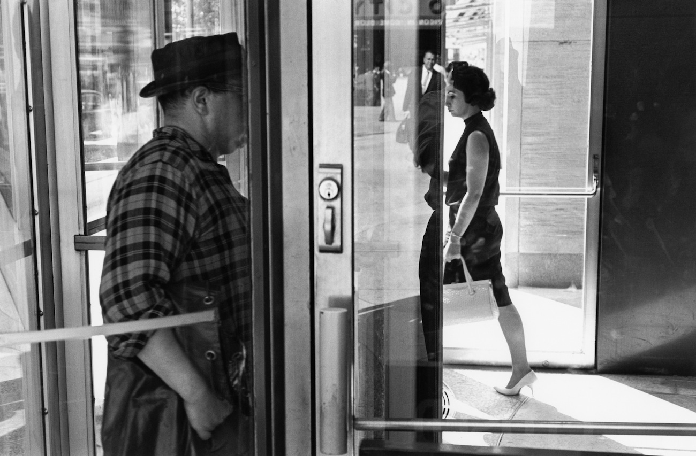
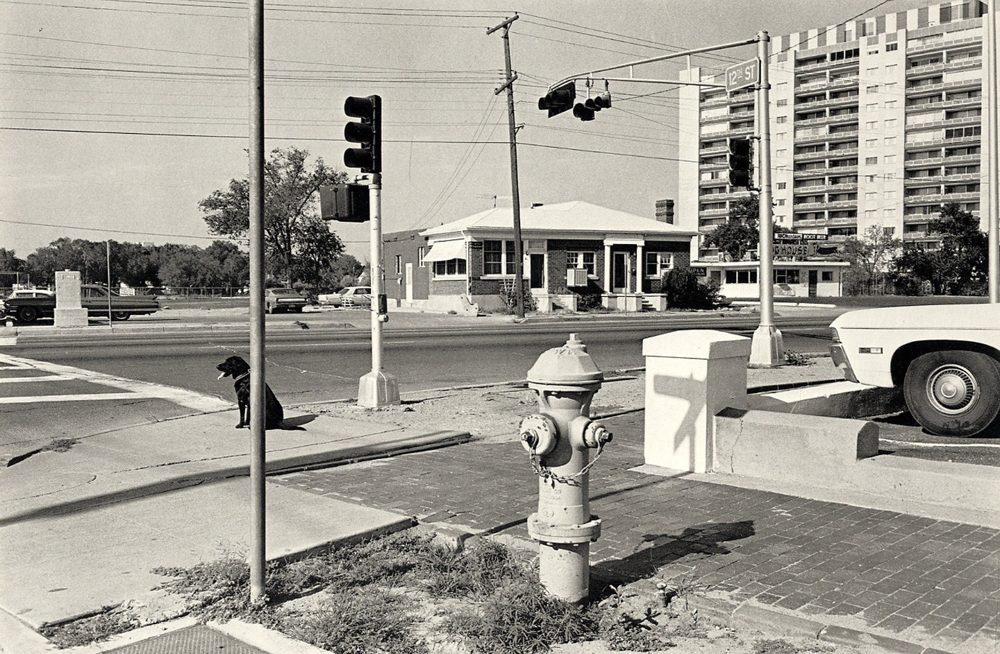
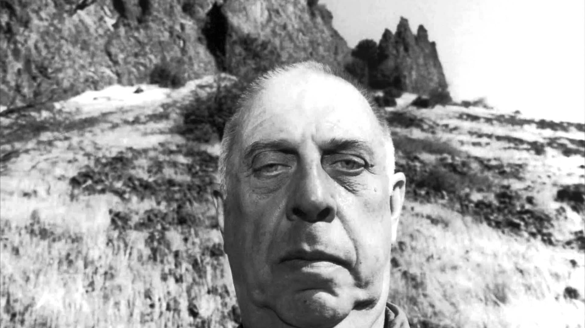
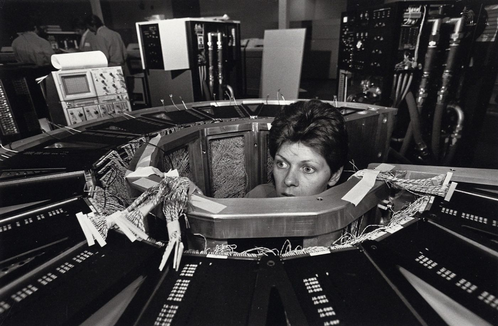
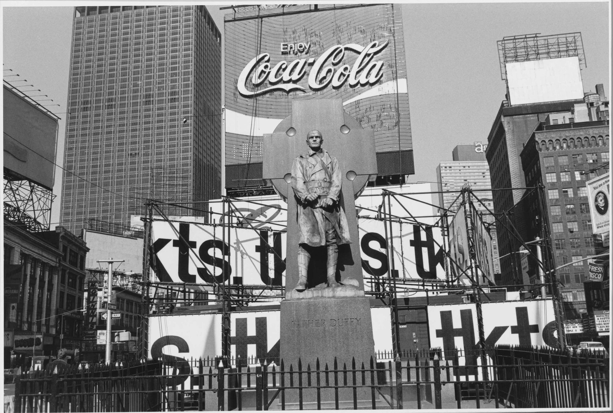
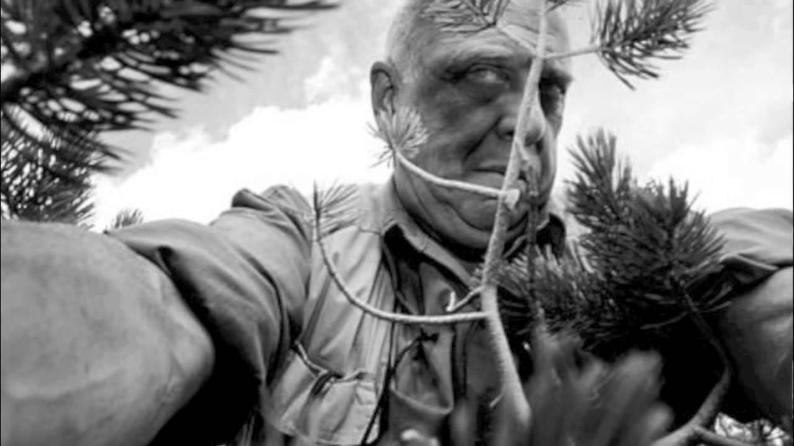

<!DOCTYPE HTML>
<html>
<head><meta name="generator" content="Hexo 3.8.0">
  <meta charset="utf-8">
  
  <title>摄影大师印象（六）—— Lee Friedlander | 蛋疼的蛋蛋的老窝</title>
  <meta name="author" content="蛋疼的蛋蛋">
  
  <meta name="description" content="键盘摄影，忽悠理论发起者 ，后现代，摄影批评，社会学">
  
  
  <meta name="viewport" content="width=device-width, initial-scale=1, maximum-scale=1">

  <meta property="og:title" content="摄影大师印象（六）—— Lee Friedlander">
  <meta property="og:site_name" content="蛋疼的蛋蛋的老窝">

  
    <meta property="og:image" content>
  

  
  
    <link href="/favicon.png" rel="icon">
  

  <!-- CSS -->
  <link rel="stylesheet" href="/css/themes/cerulean.css" media="screen" type="text/css">
  <link rel="stylesheet" href="/css/font-awesome.css" media="screen" type="text/css">
  <link rel="stylesheet" href="/css/style.css" media="screen" type="text/css">
  <link rel="stylesheet" href="/css/responsive.css" media="screen" type="text/css">
  <link rel="stylesheet" href="/css/highlight.css" media="screen" type="text/css">
  <link rel="stylesheet" href="/css/highlight-default.min.css" media="screen" type="text/css">
  <link rel="stylesheet" href="/css/google-fonts.css" media="screen" type="text/css">
  <link rel="stylesheet" href="/css/comment.css" media="screen" type="text/css">
  <!--[if lt IE 9]>
    <script src="//html5shiv.googlecode.com/svn/trunk/html5.js"></script>
	<script src="https://cdnjs.cloudflare.com/ajax/libs/es5-shim/4.5.9/es5-shim.min.js"></script>
    <script src="https://cdnjs.cloudflare.com/ajax/libs/es5-shim/4.5.7/es5-sham.min.js"></script>
  <![endif]-->

  <script src="/js/jquery-2.0.3.min.js"></script>
  
    <script src="/js/marked.js"></script>
    <script src="/js/comment.js"></script>
    <script src="/js/timeago.min.js"></script>
    <script src="/js/highlight.min.js"></script>
	<script src="/js/spin.min.js"></script>
  
  <!-- analytics -->
  


</head>
</html>
 <body>  
  <nav id="main-nav" class="navbar navbar-inverse navbar-default navbar-fixed-top" role="navigation">
    <div class="container">
      <button type="button" class="navbar-header navbar-toggle" data-toggle="collapse" data-target=".navbar-collapse">
	<span class="sr-only">Toggle navigation</span>
        <span class="icon-bar"></span>
        <span class="icon-bar"></span>
        <span class="icon-bar"></span>
      </button>
       <a class="navbar-brand" href="/">蛋疼的蛋蛋的老窝</a>
      <div class="collapse navbar-collapse nav-menu">
		<ul class="nav navbar-nav">
		  
		  <li>
			<a href="/archives" title="All the articles.">
			  <i class="fa fa-archive"></i>Archives
			</a>
		  </li>
		  
		  <li>
			<a href="/categories" title="All the categories.">
			  <i class="fa fa-folder"></i>Categories
			</a>
		  </li>
		  
		  <li>
			<a href="/tags" title="All the tags.">
			  <i class="fa fa-tags"></i>Tags
			</a>
		  </li>
		  
		  <li>
			<a href="/about" title="About me.">
			  <i class="fa fa-user"></i>About
			</a>
		  </li>
		  
		</ul>
      </div>
    </div> <!-- container -->
</nav>
<div class="clearfix"></div>

  <div class="container">
  	<div class="content">
    	 


	
		<div class="page-header page-header-inverse ">		
			<h1 class="title title-inverse "> 摄影大师印象（六）—— Lee Friedlander</h1>
		</div>		
	


<div class="row post">
	<!-- cols -->
	
	<div id="top_meta"></div>
	<div class="col-md-9">
	

	<!-- content -->
	<div class="mypage">		
	  		

	  <p>Friedlander大半辈子都在拍照，恐怕现在还在拍。<br>他是个真正的无所不拍且都拍得极好的摄影大师，裸女、社会景观（好像是由他提起的这个词，感觉和几十年前沃克·埃文斯兴起的新地形摄影很相似，或者说被包含在其中）、风景、自拍，车窗内看世界，旅馆内的小电视都是独立成册的…… 可怕的是我没有他的画册，只能从网上找到很少量的照片。</p>
<p>直接看照片吧。</p>
<p></p>
<p><br><a id="more"></a></p>
<p></p>
<p></p>
<p></p>
<p></p>
<p></p>
<p></p>
<p></p>
<p></p>
<p></p>
<p></p>
<p>Friedlander的自拍照不管是花样还是数量都非常的多。在我看来，从没有过一个摄影师如此的全面且各方面都顶尖。他的公路摄影中的社会景观常常是过往理想与当今消费符号的冲突，当今社会城市人际关系的疏离感。自然景观虽然美丽却也被枯乱树枝遮挡。个人自拍中，则凝聚着他的整整一生和感受，虽然没有文字，我们却能看出Friedlander正在做什么，现在什么状态，什么情感。</p>
<p>从我手头的 Friedlander的街头摄影照片来看，Friedlander不喜欢和街头人物过于亲近，他喜欢和他们保持相当的距离，并用环境构图来显示街头自身。</p>
<p>有人说Friedlander的构图随意，我真不知此话从何谈起。比他如此讲究构图和善于构图的摄影师恐怕寥寥无几，甚至可能是屈指可数的。<br>他明晰照片作为一种瞬间的平面产物与现实立体不同的特点，针对这特点他对于自身、眼前的影像，镜子类反射的拍摄者背后的影像、以及前中远景进行一系列的重组。在车窗外的世界系列中表现最为明显，我们可以看到Friedlander通过车门，后视镜对当前荒凉且缺少看点的景象进行重组，展现其庞大的重组和构图魔力。其中车门对景物进行分割，反光镜反射的景象试图与真正用肉眼直接看到的景象进行合成。<br>这些照片并不是表现现实的世界是怎样的图景，而是独立成形，成为Friedlander的摄影语言。从某种意义上来说，照片中的世界甚至和拍摄时的那个真实的世界无关，而是独自成为了一个世界。从这个独自世界里去看、理解就构成了当代摄影。本系列介绍的所有大师几乎都是如此。</p>
<p>题外话：意外的发现，Diane Arbus，Gary Winogrand，Lee Friedlander当时是被同一人——纽约现代艺术馆摄影部主任John Szarkowsk慧眼识珠，力排众议，于1967年在新纪实摄影展向主流世界展览介绍的。这三位大师都是我心目中的顶尖大师！John Szarkowsk大概是顶尖伯乐吧！</p>
<p>差点忘说了，Lee Friedlander拍过两本裸女照片书。在国外二手书网站Abebooks上可以买到很便宜的。<br>我之前只随便看过几张，感觉并不喜欢，感觉大部份好像在套布列松几何构图一样，感觉很生硬，根本不是Friedlander的水平。<br>好友 <a href="mailto:saintjoe327@hotmail.com" target="_blank" rel="noopener">saintjoe</a> （微信号：saintjoe）有天跟我说起Friedlander的这些裸女图，他说感觉充满了张力。当我再回头看时，不禁感到震撼。确实不是简单的几何构图，而是确实突出了女人人体的力量，画面饱满，爆炸与柔美并存。<br></p>
<p></p>
<p></p>
<p></p>
<div><h1>推荐文章<span style="font-size:0.45em; color:gray">（由<a href="https://github.com/huiwang/hexo-recommended-posts">hexo文章推荐插件</a>驱动）</span></h1><ul><li><a href="http://sd44.github.io/2017/07/06/摄影大师印象（三）——-Werner-Bischof/">摄影大师印象（三）—— Werner Bischof</a></li><li><a href="http://sd44.github.io/2017/07/10/摄影大师印象（十）——-Bruce-Gilden/">摄影大师印象（十）—— Bruce Gilden</a></li><li><a href="http://sd44.github.io/2017/07/06/摄影大师印象（二）-Sebastiao-Salgado/">摄影大师印象（二） —— Sebastião Salgado</a></li><li><a href="http://sd44.github.io/2017/07/06/摄影大师印象（一）——Diane-Arbus/">摄影大师印象（一）—— Diane Arbus</a></li><li><a href="https://reuixiy.github.io/beautiful/bb-for-fun/2017/01/28/untitled-7.html">给我起个名字吧 - 7</a></li><li><a href="https://reuixiy.github.io/beautiful/notnow/2017/05/30/photograph.html">快拍下那刻，手机！</a></li><li><a href="https://reuixiy.github.io/beautiful/notnow/2017/08/27/a-little-gecko-come-suddenly.html">突如其来的小壁虎</a></li></ul></div>	  
	</div>

	<!-- recommended posts -->
	
		

    <div class="recommended_posts">
        <h1>推荐文章</h1>
        <ul>
            
                <li><a href="http://sd44.github.io/2017/07/06/摄影大师印象（三）——-Werner-Bischof/">摄影大师印象（三）—— Werner Bischof</a></li>
            
                <li><a href="http://sd44.github.io/2017/07/10/摄影大师印象（十）——-Bruce-Gilden/">摄影大师印象（十）—— Bruce Gilden</a></li>
            
                <li><a href="http://sd44.github.io/2017/07/06/摄影大师印象（二）-Sebastiao-Salgado/">摄影大师印象（二） —— Sebastião Salgado</a></li>
            
                <li><a href="http://sd44.github.io/2017/07/06/摄影大师印象（一）——Diane-Arbus/">摄影大师印象（一）—— Diane Arbus</a></li>
            
                <li><a href="https://reuixiy.github.io/beautiful/bb-for-fun/2017/01/28/untitled-7.html">给我起个名字吧 - 7</a></li>
            
                <li><a href="https://reuixiy.github.io/beautiful/notnow/2017/05/30/photograph.html">快拍下那刻，手机！</a></li>
            
                <li><a href="https://reuixiy.github.io/beautiful/notnow/2017/08/27/a-little-gecko-come-suddenly.html">突如其来的小壁虎</a></li>
            
        </ul>
    </div>

	

	<div>
  	<center>
	<div class="pagination">
<ul class="pagination">
	 
				
    	<li class="prev"><a href="/2017/07/06/摄影大师印象（七）-——-Philip-Jones-Griffiths/" class="alignleft prev"><i class="fa fa-arrow-circle-o-left"></i>上一页</a></li>
  		

        <li><a href="/archives"><i class="fa fa-archive"></i>Archive</a></li>

		
		   <li class="next"><a href="/2017/07/06/摄影大师印象（五）-——-Gary-Winogrand/" class="alignright next">下一页<i class="fa fa-arrow-circle-o-right"></i></a></li>         
        
	
</ul>
</div>

    </center>
	</div>

    <!-- share -->
    
        
    <div class="bdsharebuttonbox">
        <a href="#" class="bds_more" data-cmd="more"></a>
        <a href="#" class="bds_weixin" data-cmd="weixin" title="分享到微信"></a>
        <a href="#" class="bds_tsina" data-cmd="tsina" title="分享到新浪微博"></a>
        <a href="#" class="bds_fbook" data-cmd="fbook" title="分享到Facebook"></a>
        <a href="#" class="bds_twi" data-cmd="twi" title="分享到Twitter"></a>
        <a href="#" class="bds_linkedin" data-cmd="linkedin" title="分享到linkedin"></a>
        <a href="#" class="bds_evernotecn" data-cmd="evernotecn" title="分享到印象笔记"></a>
        <a href="#" class="bds_youdao" data-cmd="youdao" title="分享到有道云笔记"></a>
        <a href="#" class="bds_copy" data-cmd="copy" title="分享到复制网址"></a>
    </div>
    <script>
        window._bd_share_config={"common":{"bdSnsKey":{},"bdText":"","bdMini":"2","bdMiniList":false,"bdPic":"","bdStyle":"1","bdSize":"24"},"share":{}};
        with(document)0[(getElementsByTagName('head')[0]||body).appendChild(createElement('script')).src='http://bdimg.share.baidu.com/static/api/js/share.js?v=89860593.js?cdnversion='+~(-new Date()/36e5)];
    </script>


        

    
	
	<!-- comment -->
	
<section id="comment">
  <h2 class="title">留言</h2>
    	 
	 <div id="comment-thread"></div>
	 <div id="loading-spin"></div>
	 <script type="text/javascript">
	   getComments({
           type: "github" ? "github" : "github",       
	       user: "sd44",
	       repo: "sd44.github.com",
		   client_id: "ab7ce3ed7ff8a2d3fae1",
           client_secret: "126c9caf215e5571b35c521e60c346ba274f7347",
		   no_comment: "暂时还没有留言呢，点击下面的按钮去留言吧！",
		   go_to_comment: "去留言",
		   no_issue: "no_issue",
		   issue_title: "摄影大师印象（六）—— Lee Friedlander",
		   issue_id: "",
		   btn_class: "btn btn-primary",
		   comments_target: "#comment-thread",
		   loading_target: "#loading_spin"
		   });
	 </script>
  
</section>


	</div> <!-- col-md-9/col-md-12 -->
		
	
	<div id="side_meta">
		<div class="col-md-3" id="post_meta"> 

	<!-- date -->
	
	<div class="meta-widget">
	<i class="fa fa-clock-o"></i>
	2017-07-06 
	</div>
	

	<!-- categories -->
    
	<div class="meta-widget">
	<a data-toggle="collapse" data-target="#categorys"><i class="fa fa-folder"></i></a>	
    <ul id="categorys" class="tag_box list-unstyled collapse in">
          
  <li>
    </li><li><a href="/categories/摄影大师印象/">摄影大师印象<span>11</span></a></li>
  

    </ul>
	</div>
	

	<!-- tags -->
	
	<div class="meta-widget">
	<a data-toggle="collapse" data-target="#tags"><i class="fa fa-tags"></i></a>		  
    <ul id="tags" class="tag_box list-unstyled collapse in">	  
	    
  <li><a href="/tags/摄影/">摄影<span>11</span></a></li> <li><a href="/tags/Friedlander/">Friedlander<span>1</span></a></li> <li><a href="/tags/弗里德兰德/">弗里德兰德<span>1</span></a></li>
    </ul>
	</div>
	

	<!-- toc -->
	<div class="meta-widget">
	
	</div>
	
    <hr>
	
</div><!-- col-md-3 -->

	</div>
		

</div><!-- row -->


	</div>
  </div>
  <div class="container-narrow">
  <footer> <p>
  &copy; 2019 蛋疼的蛋蛋
  
      with help from <a href="http://hexo.io/" target="_blank">Hexo</a> and <a href="http://getbootstrap.com/" target="_blank">Twitter Bootstrap</a>. Theme by <a href="http://github.com/wzpan/hexo-theme-freemind/">Freemind</a>.    
</p> </footer>
</div> <!-- container-narrow -->
  


  
<a id="gotop" href="#">   
  <span>▲</span> 
</a>

<script src="/js/jquery.imagesloaded.min.js"></script>
<script src="/js/gallery.js"></script>
<script src="/js/bootstrap.min.js"></script>
<script src="/js/main.js"></script>
<script src="/js/search.js"></script> 


<link rel="stylesheet" href="/fancybox/jquery.fancybox.css" media="screen" type="text/css">
<script src="/fancybox/jquery.fancybox.pack.js"></script>
<script type="text/javascript">
(function($){
  $('.fancybox').fancybox();
})(jQuery);
</script>


   <script type="text/javascript">      
     var search_path = "search.xml";
	 if (search_path.length == 0) {
	 	search_path = "search.xml";
	 }
	 var path = "/" + search_path;
     searchFunc(path, 'local-search-input', 'local-search-result');
   </script>


<!-- syntax highlighting -->

  <script>
  marked.setOptions({
    highlight: function (code, lang) {
        return hljs.highlightAuto(code).value;
    }
  });
  function Highlighting(){
    var markdowns = document.getElementsByClassName('markdown');
    for(var i=0;i<markdowns.length;i++){
        if(markdowns[i].innerHTML) markdowns[i].innerHTML =marked(markdowns[i].innerHTML);
    }
  }
  window.addEventListener('DOMContentLoaded', Highlighting, false);
  window.addEventListener('load', Highlighting, false);
  </script>


</body>
   </html>
